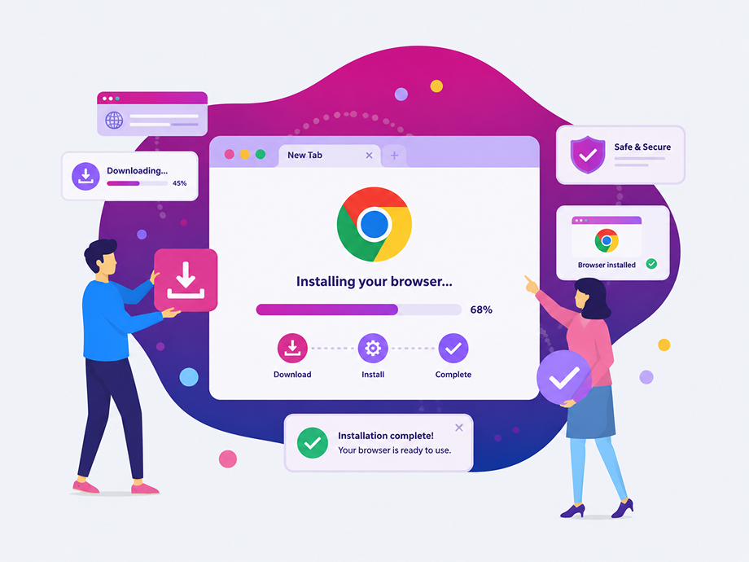

Windows
Loading… · Windows 10/11 · 64-bit
DOWNLOAD THE INSTALLER- Windows 10 or Windows 11
- Run the installer from File Explorer
- Approve SmartScreen or security prompts if shown
Loading… · Windows 10/11 · 64-bit
DOWNLOAD THE INSTALLER
Use the button above to download the official .exe installer.
Double-click the installer. If Windows shows a blue SmartScreen screen, choose More info then Run anyway when instructed by your team.
Open OneForma from the Start menu or desktop shortcut and sign in.
If Windows Defender or company security software asks for confirmation, verify the publisher and allow the installation. Need Mac? Mac install guide.
Download channel
Internal channels stay selected in this browser until you choose Production again.
Testing the QA build? Follow the Tester walkthrough.